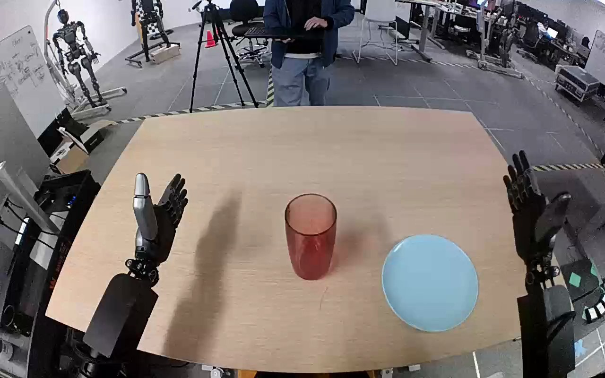

NVIDIA GR1 · 53
Video 53

Visual review action_review.json
{
"prompt_protocol": "humanoid_action_v1",
"prompt_provenance": "visually_authored_from_video_and_initial_frame",
"reviewed_contact_sheets": [
"sheet_001.jpg"
],
"inspected_frame_stride": 2,
"inspected_sampled_frame_count": 60,
"initial_scene": "Robot-facing elevated egocentric view over a tan table. A translucent red cup stands near the middle, with a light blue plate to its right. Both open robot hands and forearms emerge from the near edge; no person touches the task objects.",
"observed_sequence": [
{
"start_frame": 0,
"end_frame": 14,
"action": "Both hands are open; cup stands on table and plate is empty.",
"confidence": "high"
},
{
"start_frame": 15,
"end_frame": 46,
"action": "Right arm moves inward across the plate toward the cup, with the hand open around its upper side. Left hand stays clear.",
"confidence": "high"
},
{
"start_frame": 47,
"end_frame": 64,
"action": "Right fingers and thumb close around the cup sides, securing it and beginning to lift.",
"confidence": "high"
},
{
"start_frame": 65,
"end_frame": 90,
"action": "Right hand lifts the cup clear of the table and transports it toward the blue plate.",
"confidence": "high"
},
{
"start_frame": 91,
"end_frame": 109,
"action": "Cup is carried above the plate and lowered while still held by the right hand.",
"confidence": "high"
},
{
"start_frame": 110,
"end_frame": 115,
"action": "Right fingers spread to release the cup over the plate; the cup tilts during release.",
"confidence": "high"
},
{
"start_frame": 116,
"end_frame": 119,
"action": "Right hand is open and separates from the released cup. Cup remains on the plate, with changing apparent tilt as it settles.",
"confidence": "high"
}
],
"arm_hand_roles": {
"right": "Sole manipulating hand: reaches, encloses cup with thumb and fingers, lifts and carries it to plate, lowers, opens to release, and moves clear.",
"left": "Open, held clear to the left throughout; no object contact, support, transfer, or coordination with the right hand."
},
"anatomical_side_evidence": "The generation view looks forward from the robot toward the table. The manipulating forearm enters from the robot-side lower-right attachment and continues to the right hand; the opposite forearm enters from lower left. The thumbs face inward in the initial pose, consistent with anatomical left and right in this egocentric view. This establishes robot-relative right beyond image-side labeling; the original right-hand annotation agrees.",
"coordination": "Single-hand manipulation; left hand does not support the cup or plate. No hand-to-hand transfer or interaction with the background person.",
"terminal_state": "The right hand is open and separated from the red cup, which is on the blue plate. The cup changes apparent tilt after release; the short ending does not establish long-term settled stability.",
"uncertainties": [
"Precise contact between individual fingertips and cup is partly obscured by the right hand.",
"The final short interval does not establish whether the cup remains stably upright after its release and settling motion."
],
"annotation_discrepancies": [],
"evidence_frame_indices": [
0,
48,
76,
100,
110,
114,
116,
118,
119
],
"selected_execution_status": "success",
"outcome_basis": "The annotated transfer is visibly completed: cup is released onto the blue plate and the hand separates. Success does not assert subsequently stable upright orientation.",
"video_id": "53",
"dataset": "NVIDIA_GR1_100",
"dedicated_review_agent": "review_gr1_53",
"review_source_video": "NVIDIA_GR1_100/53/original/original.mp4",
"source_frame_count": 120,
"source_fps": 20.0,
"native_detail_frames": [
48,
76,
100,
110,
114,
116,
118,
119
],
"world_model_prompt": "The robot uses its right hand to grasp the translucent red cup around its upper sides and lift it from the table. It carries the cup over the light blue plate, lowers it, and opens its fingers to release the cup onto the plate before drawing the hand clear. Keep the camera fixed; preserve robot geometry, physically valid joint motion, and normal gripper opening and closing.",
"original_task_instruction": "Use the right hand to pick up clear red cup from tan table to light blue plate.",
"selected_segment": {
"start_frame": 0,
"end_frame_exclusive": 120,
"reason": "Complete original single-task reference; no cropping or trimming requested."
},
"source_video_sha256": "d3468483dc38c4aeff674bc957d37c16a10d114ca068b897901f7ebbe928ffba",
"review_completed_at": "2026-10-13T18:12:55.435380+00:00"
}